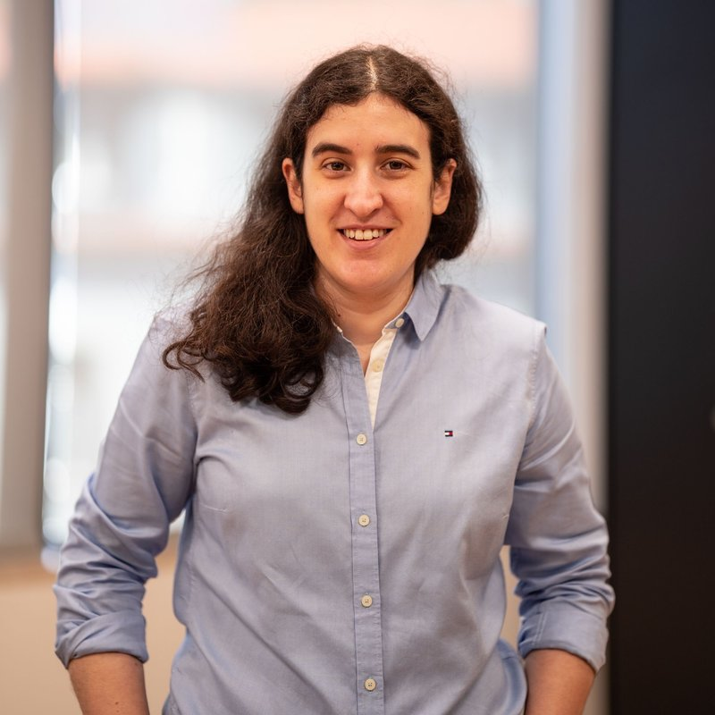

Inês Santos Silva
Women's health is the largest underinvested market in medicine. I build companies and investment vehicles to close the funding, data, and care gaps that have kept it that way, from preventive primary care to ovarian aging and longevity science.
I'm co-founder and COO of TejoMed, Portugal's first membership-based family medicine clinic. Prevention is our clinical philosophy, and we build the doctor-patient relationship to last decades, not minutes. We want to change how people access primary care.
I'm also on the core team of AthenaBIO, an investment platform backing early-stage biotech in women's health and ovarian aging. Our thesis is simple: women's health is chronically underfunded and overlooked, and that mismatch makes it one of the most compelling opportunities in biotech and pharma today. Women are actively looking for solutions, and the science is finally catching up.
Separately, I co-founded Portuguese Women in Tech to bring more women into the industry, and I organize its Women & Wealth and Women & Leadership conferences.
I'm a non-executive board member at Almedina, one of Portugal's most established publishers.
Before all this, I went through the Singularity University Graduate Studies Program (2013) and the THNK School of Creative Leadership (2014), and I was a Marshall Memorial Fellow (2019) of the German Marshall Fund.
I read widely across business, history, and science. Some favourites are on my bookshelf, and the rest on Goodreads.